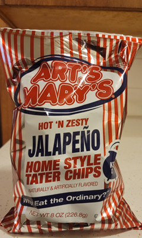

Art's & Mary's Brief Description
Art's & Mary's Brief is a local Wichita, KS company who started in the 80’s. The Art’s & Mary’s chips have bold flavors and extra crunch that makes them amazing!

Art's & Mary's Chip Flavor'
- Thick N Crunchy Original
- Thick N Crunchy Original No Salt Added
- Classic Salt 'N Vinegar
- Hot N Zesty Jalapeno
Art's & Mary's Testimonial
These chips are so good that Art's & Mary's states that the Hot N Zest Jalapeno chips are their best selling chips. As you can see from the statement Art's & Mary's posts on their website.
“Our best-selling potato chip is the Hot 'N Zesty Jalapeño Flavored potato chips. We dare you to try them. No, we double-dog dare you!”
Art's and Mary's TATER Chips: BEST potato chips & snack food. (n.d.). Retrieved February 28, 2021, from https://artsandmarys.com/